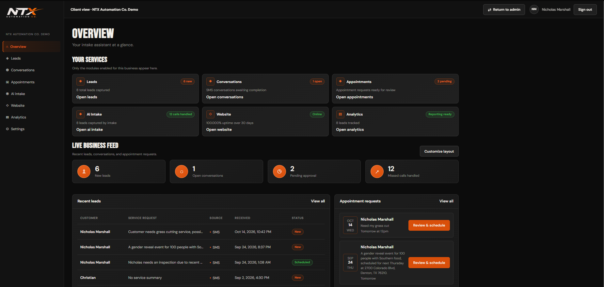
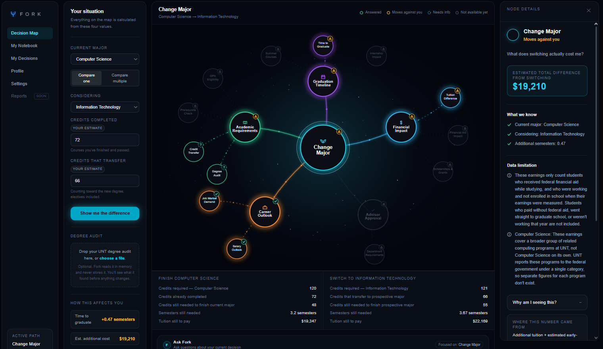

01 / NTX Automation Co.2026

AI that catches the call nobody answered.
A multi tenant SMS intake platform that follows up after a missed call, gathers service details, handles consent, and gives local businesses a usable lead pipeline.
I’m a Computer Science student and builder turning messy, real life problems into practical systems. I work across AI, automation, and full stack product development.
Each project starts with a real point of friction and ends with something a person can use, inspect, or build on.

A multi tenant SMS intake platform that follows up after a missed call, gathers service details, handles consent, and gives local businesses a usable lead pipeline.

A decision tool for UNT students comparing majors, degree time, transfer credit, cost, and career data with visible sources.
An eye control prototype exploring hands free interaction for people who cannot rely on a conventional mouse.
I like hard technical problems, but I care even more about whether the finished thing makes someone’s day less frustrating.
Listen before deciding what to build. The correct problem is usually more valuable than the fanciest feature.
Scope tightly, make it work end to end, and put real interaction ahead of a polished mockup.
Use real data, visible tradeoffs, and demos people can understand without a ten minute explanation.
I founded NTX Automation Co. to build practical websites and customer intake systems for local businesses, then learned what happens when software has to work outside a classroom.
Visit NTX Automation Co. ↗I’m moving toward healthcare AI and computer vision, where careful engineering can support patients and clinicians instead of just moving numbers around.
Why this direction ↓I’m Nicholas, a first generation college student at the University of North Texas. I am drawn to technology because it can turn a confusing task, a missed opportunity, or an inaccessible interface into something more manageable. That is the kind of impact I want my work to have.
I’m looking for internships, research opportunities, and product teams where I can learn fast and build technology that earns its place in people’s lives.